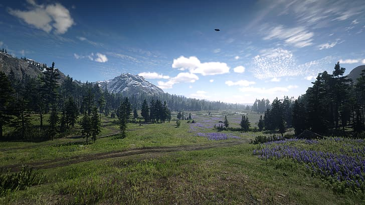
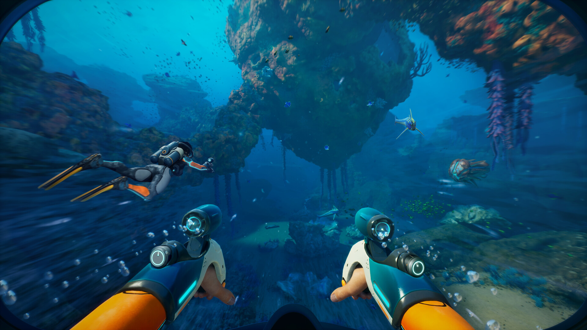
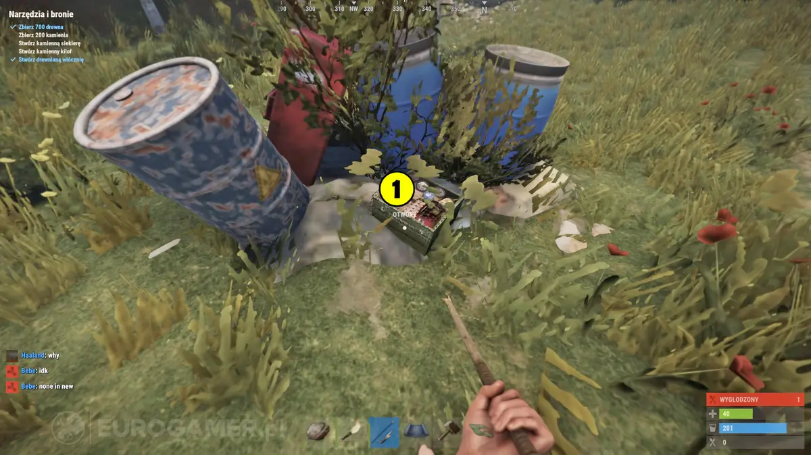
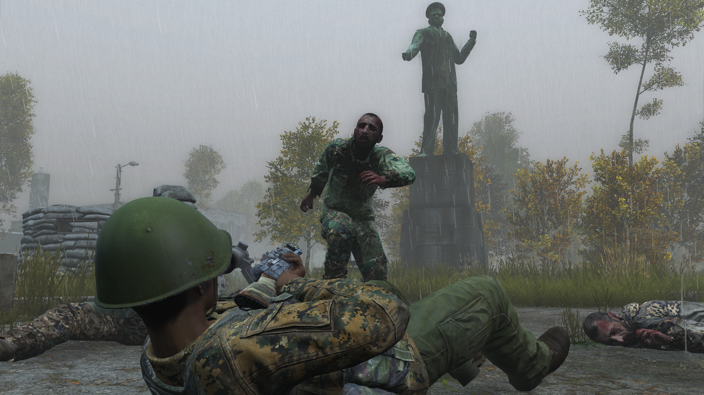
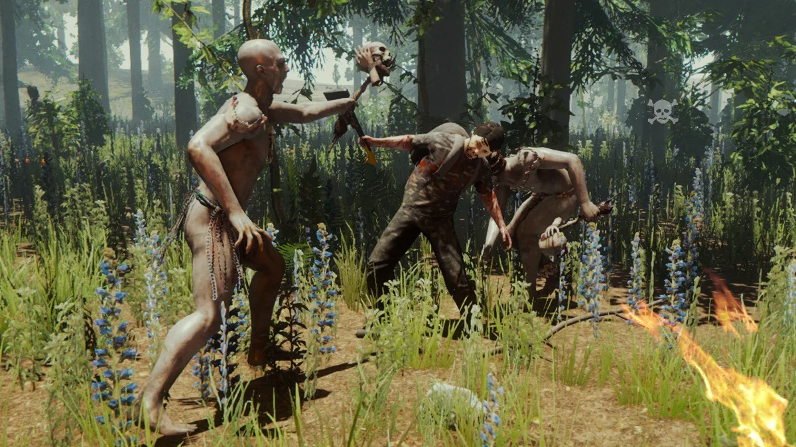
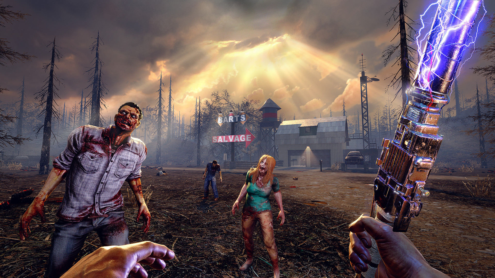

Ігри жанру survival часто зосереджуються на реалістичних природних умовах, що вимагають від гравців адаптації та виживання. Наприклад, у грі Red Dead Redemption 2 гравці стикаються з мінливою погодою, що впливає на їхню здатність пересуватися та взаємодіяти з оточенням.
У грі Subnautica гравці досліджують підводний світ планети 4546B, де представлені різноманітні види флори та фауни. Реалістичні взаємодії між видами створюють складну екосистему, яка впливає на стратегії виживання гравця.
У грі Rust основною задачею гравців є збір ресурсів для створення інструментів, зброї та укріплень. Постійна боротьба за ресурси створює напружену атмосферу конкуренції між гравцями.
У грі DayZ гравці стикаються з іншими виживальниками, що може призвести до конфліктів або альянсів. Бойова система включає різні види зброї та тактики, що дозволяє гравцям адаптуватися до ситуацій.
Гра The Forest поєднує елементи виживання з захоплюючим сюжетом про зниклу літаку та виживання серед таємничих канібалів. Розвиток подій та взаємодія з іншими персонажами додають глибині грі.
У грі 7 Days to Die гравці можуть розвивати навички свого персонажа, що впливає на ефективність у різних аспектах, таких як будівництво, виживання та боротьба. Цей механізм дозволяє гравцям адаптуватися до власного стилю гри.
